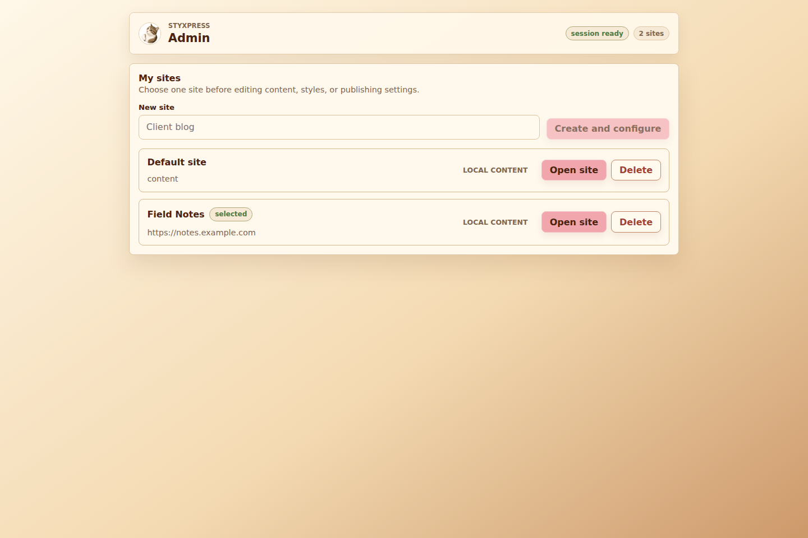
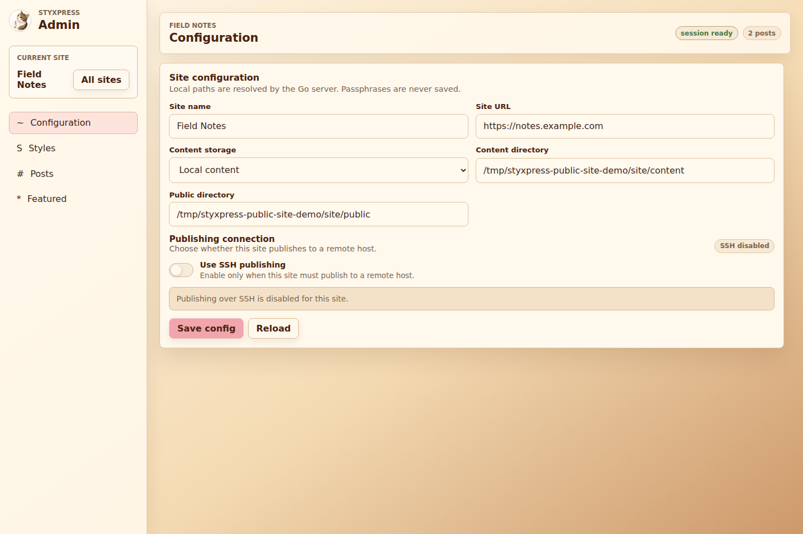
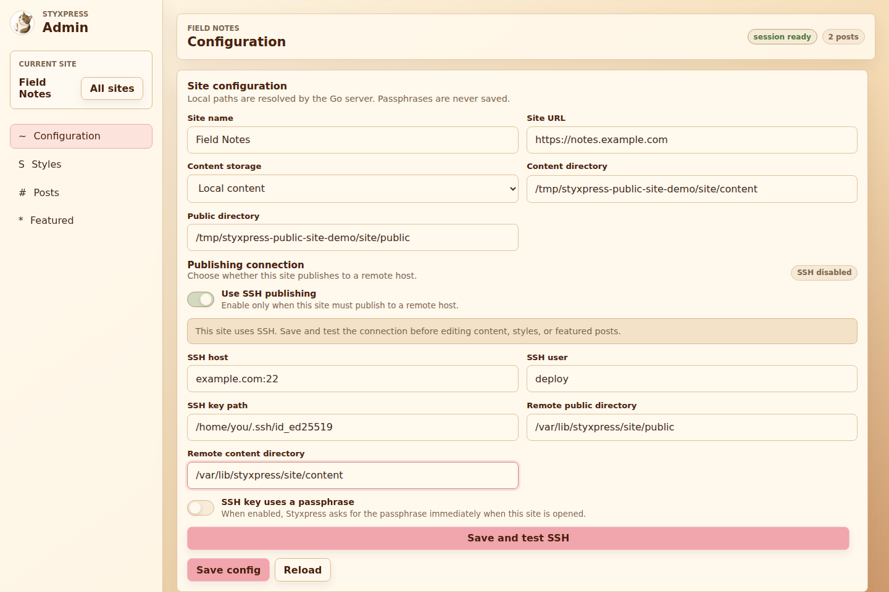
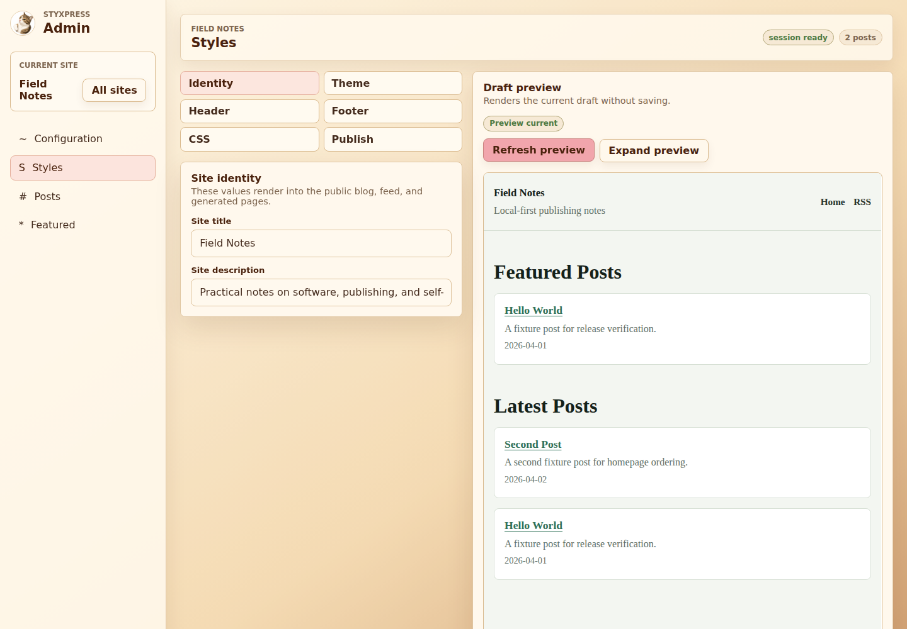
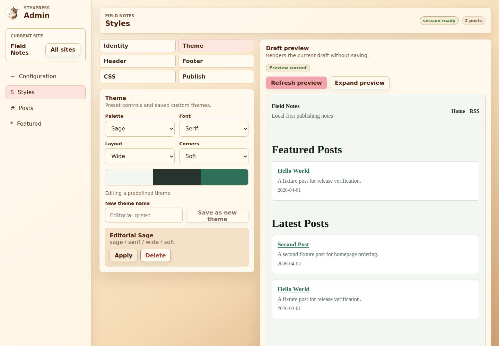
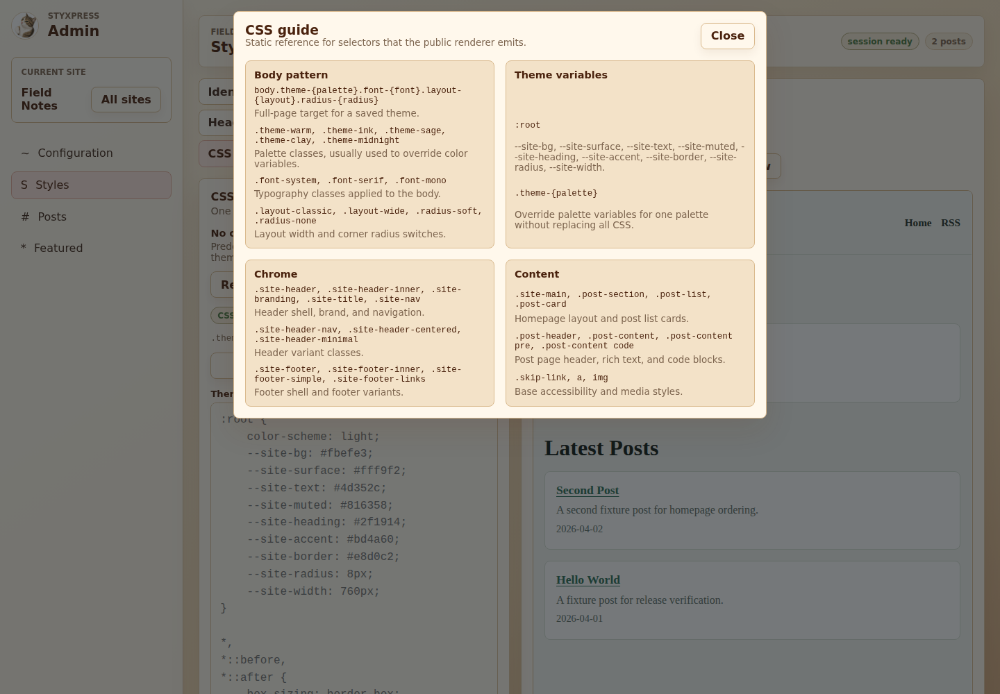
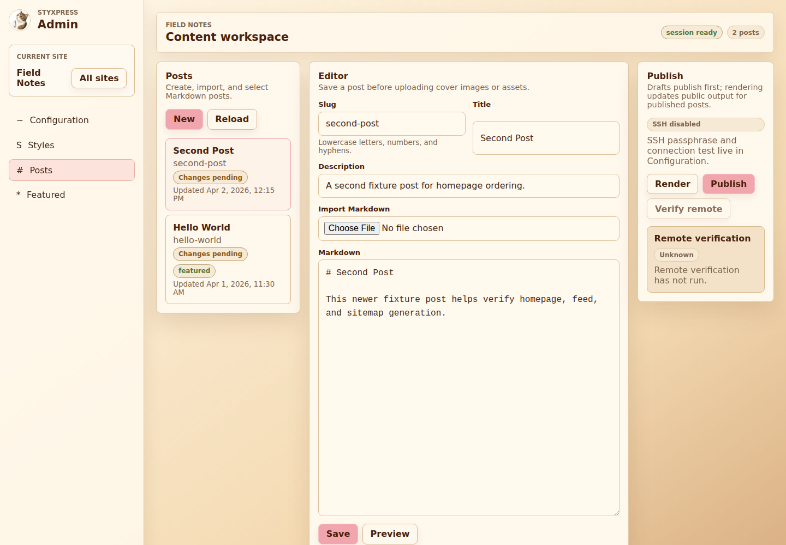
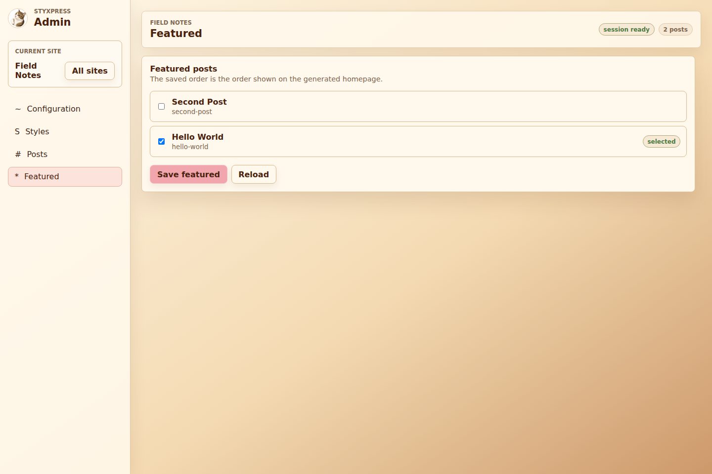
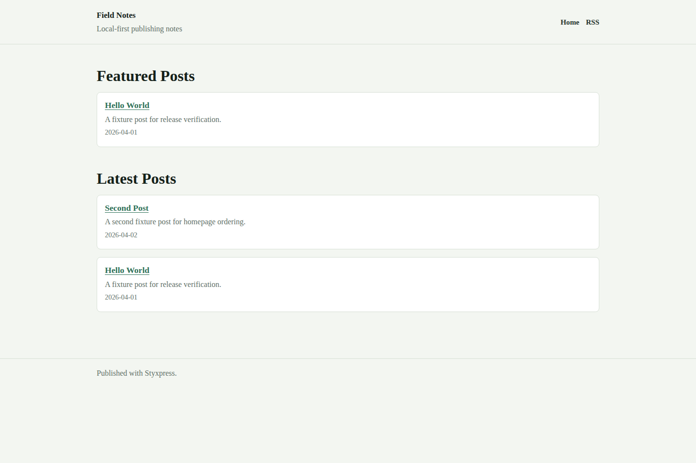

Start The Admin
Download the Styxpress admin binary for your platform, make it executable if needed, then run it locally. By default Styxpress binds to 127.0.0.1:0, which means your operating system chooses an available local port.
chmod +x ./styxpress-admin
./styxpress-adminTo use a fixed local port:
./styxpress-admin -addr 127.0.0.1:8080On Windows:
.\styxpress-admin.exe -addr 127.0.0.1:8080Keep the admin bound to 127.0.0.1 unless you know exactly what you are doing. The admin can read and write configured local content directories and uses your SSH key path for publishing.
Styxpress prints a local URL and an API session token. Open the printed URL in your browser. The embedded admin UI receives the session token automatically. If the browser asks for a session token, paste the token printed in the terminal.
Create Or Open A Site
The first screen is My sites. Use it to create a site, switch between sites, or open the selected site before editing configuration, styles, posts, or featured entries.
- Enter a site name.
- Click Create and configure.
- Click Open site on a site card.
- Use All sites in the sidebar to return to the site list.

If Styxpress was started with -config, it uses that explicit config file. In that mode, the site list cannot create multiple sites.
./styxpress-admin -config ./styxpress.tomlConfigure Site
Open Configuration first. These fields tell Styxpress where source content lives, where generated public files are written, and what canonical URL should be used in generated pages, feeds, and sitemaps.
mkdir -p "$HOME/Sites/field-notes/content" "$HOME/Sites/field-notes/public"
The public web server should serve the generated public/ directory only. Do not serve content/, Styxpress config files, SSH keys, or the repository root.
SFTP Publishing
Enable Use SSH publishing when Styxpress should upload generated files to a remote host. Fill the SSH host, user, key path, and remote public directory, then click Save and test SSH.

Styxpress does not save SSH key passphrases. If the key is encrypted, enter the passphrase when opening the site, testing the connection, publishing, or verifying remote files.
Style The Site
Open Styles to edit the generated public site presentation. The left side contains sections for identity, theme, header, footer, CSS, and publishing. The right side shows Draft preview, which renders the current form without writing public files.
- In Identity, set the site title and description.
- In Theme, choose palette, font, layout, and corners.
- In Header, choose a header style and edit navigation links.
- In Footer, choose a footer style and footer links.
- In CSS, refresh generated CSS, load current CSS into the editor, or open the selector guide.
- Click Refresh preview to inspect the draft before saving.
- Click Save site to write
content/site.toml.



Preview does not publish files. To rewrite the static output after style changes, use Save and render site or Save and publish site in the Styles publish section.
Write Posts
Open Posts to create, import, edit, preview, render, and publish Markdown posts. A saved post is a draft until it has a publication timestamp. Drafts are not included in the homepage, feed, sitemap, or public output.
- Click New.
- Enter a lowercase slug such as
designing-a-quiet-static-blog. - Enter a title and description.
- Write Markdown or use Import Markdown.
- Click Save.

Slugs may contain lowercase ASCII letters, numbers, and hyphens. Save the post before uploading media. Covers must be named cover.jpg, cover.jpeg, cover.png, cover.webp, or cover.avif.
Preview, Render, Publish
Preview renders the current Markdown draft inside the admin UI without writing public files. Render writes local public output for an already published post. Publish renders locally, uploads files over SFTP, and sets the first publication timestamp for a draft post.
- Save the post.
- Click Preview to inspect Markdown output.
- Configure and test SSH before the first publish.
- Click Publish to publish the post and update the generated site.
- After later edits, click Render for local output only, or Publish to upload changes.

To regenerate all public pages, open Styles -> Publish. Use Save and render site for local output, or Save and publish site to render and upload all public files.
Rendering includes only published posts. If a post is still a draft, it will not appear in public/index.html, feed.xml, sitemap.xml, or public/posts/{slug}/index.html.
Remote Verification
Verify remote compares generated local files with the remote public directory. Styxpress checks file size and SHA-256 hashes, then updates the badges shown in the post list and publish panel.
Local and remote files match.
Local generated output differs from remote output.
A generated local file is missing remotely.
Draft output still exists remotely and should be removed manually.
Verification has not run or a file could not be checked.
Verification checks deployed static files by size and SHA-256. It does not make the remote server dynamic and does not execute public application code.
Featured Posts
Open Featured to choose posts for the generated homepage's featured section. Check the posts you want to feature, then click Save featured. The saved order is the order shown on the generated homepage.

Featured slugs are saved in content/featured.txt. Draft posts are not rendered into the public homepage.
Files On Disk
Styxpress uses the filesystem as the source of truth. The content directory is private source material. The public directory is generated output.
Content directory
content/
site.toml
featured.txt
posts/
hello-world/
source.md
title.txt
description.txt
published_at.txt
updated_at.txt
remote_synced_at.txt
cover.jpg
assets/Public directory
public/
index.html
feed.xml
sitemap.xml
assets/styxpress.css
posts/
hello-world/
index.html
cover.jpg
assets/Serve The Public Site
Serve public/ with Caddy, Nginx, or another static file server. The public runtime does not need Styxpress, Go, Node.js, a database, or Markdown parsing.
/
/feed.xml
/sitemap.xml
/posts/{slug}
/posts/{slug}/cover.{jpg,jpeg,png,webp,avif}
/posts/{slug}/assets/{path}
The reverse proxy root must be public/, not the project root and not the parent directory that contains content/.
Security And Limits
Styxpress is intentionally small. It is a local admin and static publishing tool, not a hosted CMS.
- No hosted CMS service.
- No public app server for readers.
- No database-backed content model.
- No multi-user admin accounts.
- No comments, analytics, scheduling, rollback, or built-in search.
- No SCP in the current publishing flow; publishing uses SFTP.
- No public serving of
content/. - Raw HTML in Markdown is escaped by default.
Troubleshooting
| Problem | What to check |
|---|---|
| The browser asks for a session token. | Paste the token printed by styxpress-admin, or restart the binary and open the printed local URL. |
| Create site is unavailable. | Styxpress was started with -config. Run without -config to use the multi-site screen. |
| SSH blocks editing. | Enter the key passphrase if required, then test the SSH connection. |
| Save and test SSH is disabled. | Fill SSH host, user, key path, and passphrase if the passphrase toggle is enabled. |
| Render is disabled for a post. | The post is still a draft. Publish it first with SSH configured. |
| A post is missing from homepage, feed, or sitemap. | Drafts are excluded. Publish the post, then render or publish the site. |
| Remote shows Changes pending. | Local generated files differ from remote files. Publish again. |
| Remote shows Still on remote. | A draft's old public output still exists remotely and should be removed from the remote public directory. |
| Cover upload fails. | Rename the file to cover.jpg, cover.jpeg, cover.png, cover.webp, or cover.avif. |
| The public server exposes source files. | The web server root is wrong. Serve only public/, never content/ or the repository root. |